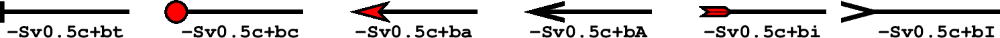

矢量/箭头
矢量是一个有大小和方向的量，通常用箭头↗ 表征矢量。一个矢量由两个独立的部分组成：矢量线和矢量头。矢量线与一般的线没有区别，通常由画笔属性（画笔）控制。这一节则主要介绍矢量头的属性及控制方式。
GMT 中能够绘制矢量的模块有 plot、 plot3d、 grdvector、 velo 等。其中最常见的绘制矢量的模块是 plot。
下面的命令使用 plot 的 -Sv 选项绘制了一个最简单的矢量。
echo 1 1 0 3 | gmt plot -R0/5/0/2 -JX5c/2c -Sv0.5c+e -W1.5p -Gred -png vector
接下来将介绍如何通过在 -Sv0.5c 后增加更多的子选项来进一步修改矢量头的属性。
矢量头位置及形状
在绘制矢量时，默认只绘制矢量线而不绘制矢量头。下面的几个子选项用于指定矢量头的位置以及形状：
+b[t|c|a|A|i|I][l|r]：在矢量线的起点加上矢量头
+e[t|c|a|A|i|I][l|r]：在矢量线的终点加上矢量头
+m[f|r][t|c|a][l|r]：在矢量线的中间加上矢量头
t|c|a|A|i|I 用于控制矢量头的形状。取不同值所对应的矢量头形状如下图所示：
 l|r 表示只绘制矢量头的左半边或右半边（默认两边都绘制）。其中左定义为从矢量起点看向终点时的左侧
f|r 在 +m 中用于指定矢量头的方向沿着正方向或逆方向（默认为正方向，即从起点指向终点）
备注
+m 不能与 +b 或 +e 一起使用
+l 只绘制左半个矢量头
+r 只绘制右半个矢量头
+aangle 用于控制矢量箭头的顶端的夹角，默认值为30度。若矢量头形状为 t 或 c 则表示端点线或端点圆圈的大小
+hshape 进一步控制矢量头 a 的形状，其中 shape 可以取-2到2之间的值。设置该子选项的值等效于修改参数 MAP_VECTOR_SHAPE （默认值为0）
下面展示了 +h 后取不同值的矢量箭头的形状：
矢量头线条颜色和填充色
默认情况下，-W选项同时控制矢量线和矢量头的画笔属性，-G 选项则控制矢量头的填充色。下面两个子选项可以单独控制矢量头的画笔属性和填充色。
+p[pen] 设置矢量头的画笔属性。若不指定 pen 则表示不绘制矢量头的轮廓
+g[fill] 设置矢量头的填充色。若不指定 fill 则表示不填充
其它属性
还可以使用如下子选项进一步控制矢量头的属性：
+nnorm 默认情况下，矢量头的大小不随着矢量线的长度变化而变化，这可能会出现矢量线很短而矢量头过大，或者矢量线很长而矢量头过小的情况。该子选项使得矢量长度小于 norm 时，矢量头的属性（画笔宽度，箭头大小）会根据矢量长度按照 length/norm 缩放。对于笛卡尔矢量，norm 使用绘图单位；对于地理矢量，norm 可以使用距离单位。
+t[b|e]trim 用于增加或缩短矢量线首端或尾端的长度。其中 b 表示首端，e 表示尾端。 trim 为正值表示缩短矢量线，为负值表示增长矢量线。也可以直接使用 +ttrim1/trim2 分别为首端和尾端指定增长/缩短量。
矢量类型及输入数据格式
GMT提供了三类矢量：
笛卡尔矢量：矢量起点到终点的矢量线以直线方式连接
地理矢量：矢量起点到终点之间的矢量线以大圆弧路径连接
弧形矢量：矢量线是以某一点为中心的一段圆弧
plot 模块中：
-Sv 或 -SV 用于绘制笛卡尔矢量
-S= 用于绘制地理矢量
-Sm 用于绘制弧形矢量
下面的例子分别绘制了三种矢量：
gmt begin arrows
# 笛卡尔矢量
echo 0.5 1.5 4.5 1.5 | gmt plot -R0/5/0/5 -JX1.75i -Sv0.2i+s+b+e -W1.5p -Gred
# 地理矢量
echo 10 -35 90 8000 | gmt plot -R0/90/-41.17/41.17 -JM1.75i -S=0.2i+b+e -W1.5p -Gred -X2i
# 弧形矢量
echo 0.5 0.5 0.9i 0 90 | gmt plot -R0/5/0/5 -JX1.75i -Sm0.2i+b+e -W1.5p -Gred -X2i
gmt end show
三种矢量：（左）笛卡尔矢量；（中）地理矢量；（右）弧形矢量
笛卡尔矢量和地理矢量
对于笛卡尔矢量和地理矢量，输入数据的格式为:
X Y angle length
其中X和Y是矢量起点坐标，angle 为矢量方向（相对于水平方向逆时针旋转的角度或相对于北向顺时针的方位角），length 为矢量线长度（长度单位为 c|i|p 或km）。
使用如下子选项则可以指定其它输入数据格式：
+s 表示将输入数据的中的 angle 和 length 解释为矢量的终点坐标
+j[b|c|e] 表示将输入数据中的X和Y坐标解释为矢量的起点坐标、中点坐标或终点坐标
对于地理矢量，还可以使用如下选项：
+q 表明输入数据中的 angle 和 length 表示相对于某个指定极点的大圆路径的起始和结束的角度。该极点默认为北极，可以使用 +o 修改该点的位置
+oplon/plat 用于指定 +q 中大圆路径中的倾斜极点
对于笛卡尔矢量而言，还可以使用：
+zscale 表示输入数据中的 angle 和 length 被解释为矢量的X分量dx和Y分量dy，然后计算出对应的极坐标下的方向和长度，并将矢量长度乘以 scale
圆弧矢量
对于圆弧矢量，输入数据中需要给定圆弧对应的圆心坐标、半径，以及圆弧起始和结束的角度，即:
X Y radius angle0 angle1